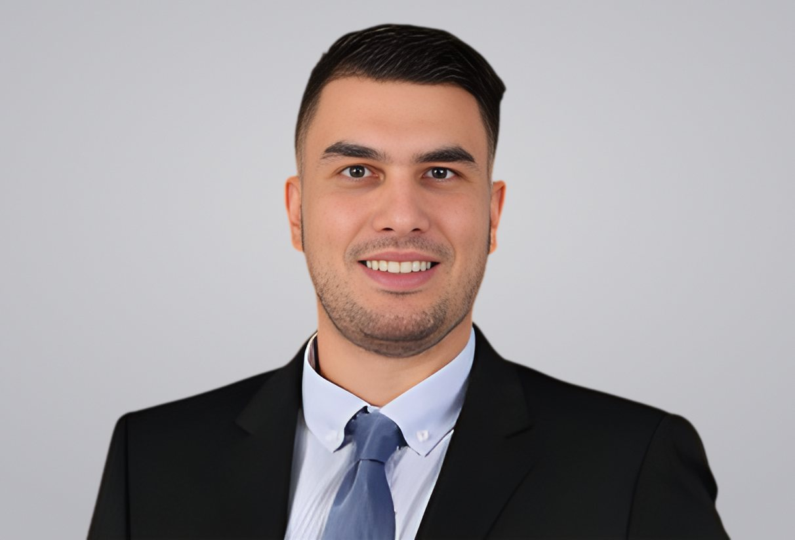

Where Will AI Land? Skill-Based Job Families, the Concentration of AI Exposure, and Early Employment Evidence
with Tripti Singh, Abdullah Yildizbasi and Hieu Pham
Proceedings of the 60th Hawaii International Conference on System Sciences (2027)

Assistant Professor of Management Science
College of Business, University of Alabama in Huntsville
Education:Ph.D. in Business Administration, Operations and Management Science (Washington State University – Carson College of Business)
I am an Assistant Professor of Management Science in the Department of Information Systems, Supply Chain, and Analytics at the University of Alabama in Huntsville. I received my Ph.D. in Business Administration (Operations and Management Science) from Washington State University in 2023, where I also earned an M.S. in Business Administration and an M.S. in Applied Statistics. Before that I trained as an electrical and computer engineer in Patras, Greece.
My research is about artificial intelligence, and transformer models in particular: how they work, where they fail, and what they change for the businesses and people who rely on them. I came to AI as a statistician. My early work, rooted in business analytics, developed methods for detecting change points in time series and multivariate data. That training in careful inference shapes how I study AI today. I build and evaluate attention-based models for business data, audit large language models for bias, and examine how reliable autonomous AI agents are and what AI means for work and employment.
with Tripti Singh, Abdullah Yildizbasi and Hieu Pham
Proceedings of the 60th Hawaii International Conference on System Sciences (2027)
with Hieu Pham, Abdullah Yildizbasi and W. Mok
Proceedings of the 60th Hawaii International Conference on System Sciences (2027)
with Anastasia Vishnevskaya, Jerry Stott and Porismita Borah
Selected for the journal cover
with Hieu Pham, Gaurav Arwade, Yi Tan and Paras Bhatt
with Ege Can and Mark W. Nichols
with Hieu Pham, Ravi Patnayakuni, Steven Verderbar and Kylee Bliss
with Yi Tan, Wafa Hakim Orman, Hieu Pham and Ravi Patnayakuni
with Paras Bhatt, Tripti Singh and Hieu Pham
with Hieu Pham, Paras Bhatt, Yi Tan and Ravi Patnayakuni
with Stergios B. Fotopoulos, Abhishek Kaul and Venkata K. Jandhyala
with Hieu Pham, Yi Tan, Tripti Singh and Ravi Patnayakuni
with Hieu Pham, Paras Bhatt, Yi Tan and Ravi Patnayakuni
2026 · San Francisco, California, November 1–4
2025 · Atlanta, Georgia, October 26–29
2024 · Seattle, Washington, October 20–23
2023 · Phoenix, Arizona, October 15–18
2026 · 57th Annual Conference, San Francisco, California, November 21–23
2025 · 56th Annual Conference, Orlando, Florida, November 22–24
2024 · 55th Annual Conference, Phoenix, Arizona, November 23–25
2023 · 54th Annual Conference, Atlanta, Georgia, November 18–20
2022 · 53rd Annual Conference, Houston, Texas, November 19–21
2025 · Nashville, Tennessee, August 2–7
Independent Instructor
Lab Instructor
Teaching Assistant
Artificial intelligence, prompt engineering, business analytics, business statistics, applied probability and statistics, systems analysis and design, statistical computing, and optimization.